Making the most of my co-op experience
I first joined the Enterprise Innovation team in September 2021 as a UX Researcher co-op. Throughout my term, I made it my mission to be as involved in as many activities as I could.
An ideathon for students
In teams of 4 to 5, co-op students across CIBC participate in the triannual Student Leadership Academy (SLA) Innovation Challenge, an ideathon that is sponsored by a specific line of business (e.g., client strategy, capital markets, AML, etc.) For my team, I created the persona to communicate our understanding of the target audience, presented how our solution would impact clients, and edited the video presentation. Overall, we placed first out of 8 other teams. After the innovation challenge, I’ve also been routinely engaged with by the program leads to come back and share my experience and expertise with other co-op students. In total, I’ve helped mentor two Innovation Challenges, with one of those teams placing in the top 3!
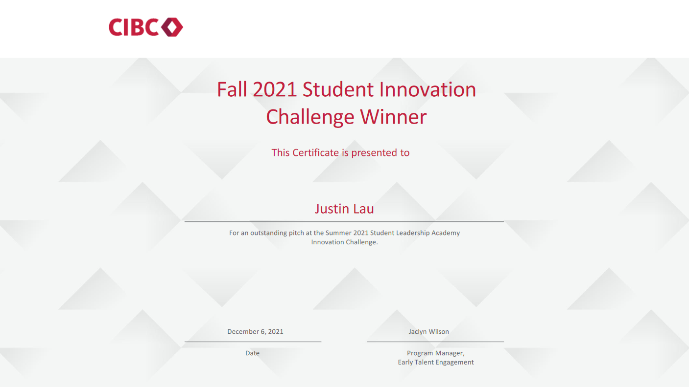
The certificate my team and I won for placing 1st in the SLA Fall 2021 Innovation Challenge.
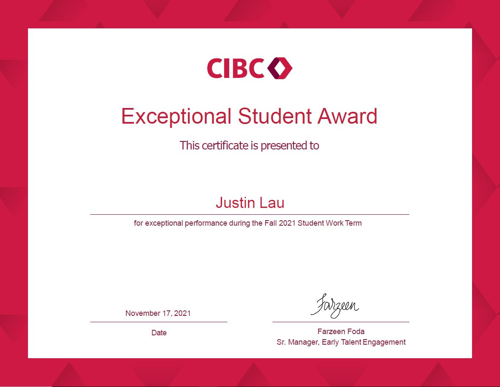
Exceptional Student Award certificate I received for my Fall 2021 term.
Exceptional Student Award
At the end of my first 4 months with the team, I was selected for the Fall 2021 Exceptional Student Award based on my team’s nomination! The award recognizes positive attitude, team spirit, and all the ways one demonstrates CIBC’s values of Trust, Teamwork, and Accountability.
SLA Student Spotlight
Shortly after, I was also recognized in the SLA Student Spotlight, a campaign that recognizes and appreciates co-op students that make a positive impact at CIBC. It’s amazing to look back on what I wrote at the time and see just how far I’ve come!
Student Leadership Academy Exec Squad (Graphic Design team)
From January to April 2022, I was a part of the SLA Exec Squad, a group of students dedicated to improving the co-op experience for future students! I wanted to keep my UI and visual design skills practiced and polished, so I co-led the Graphic Design team in charge of creating marketing material for our internal social media and email campaigns. In total, I designed 4 graphics and consulted on 4 others.
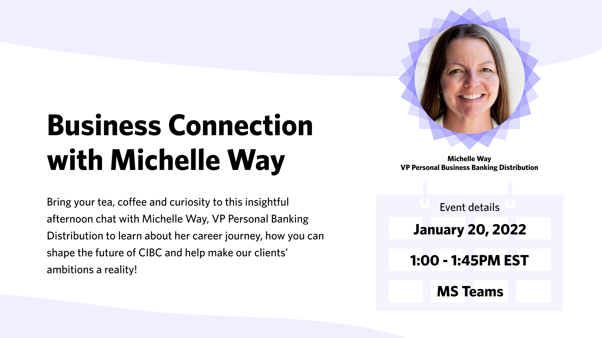
The very first graphic I designed for SLA's Business Connection series!
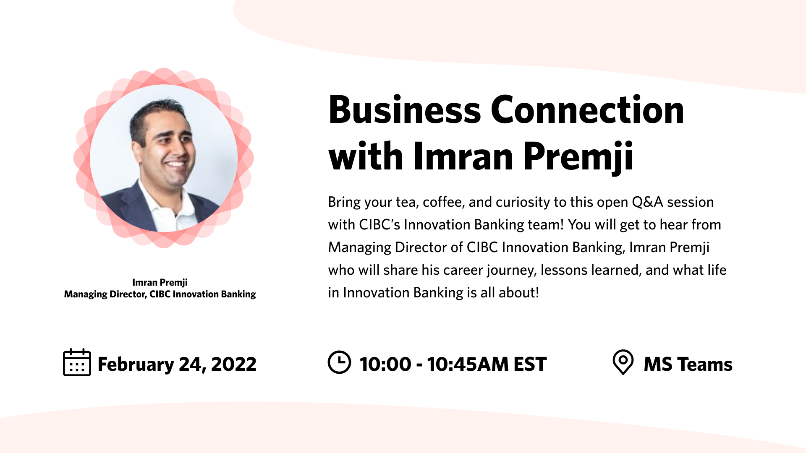
The second graphic I designed for SLA's Business Connect series. (I guess I was really into the geometric borders)
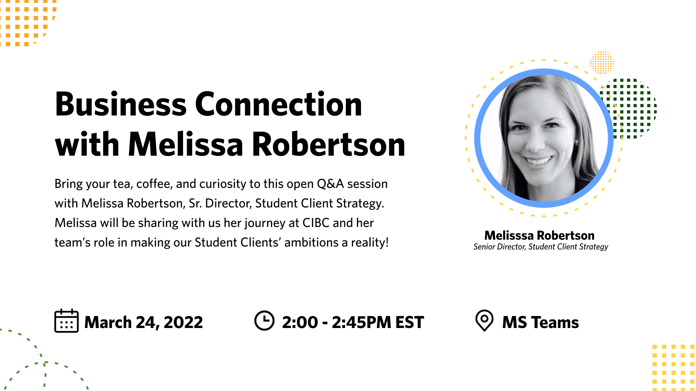
The third graphic I designed for SLA's Business Connect series. Finally using font styling to add some visual heirarchy to the name and job title 🤦
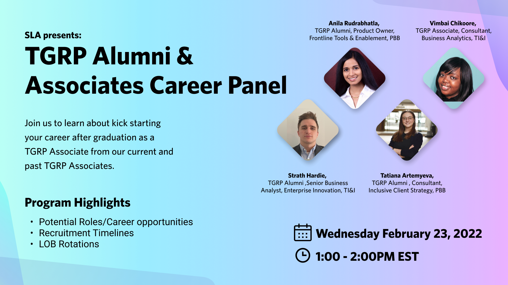
Version 1 (Draft): Borrowing similar graphic elements from my previous designs, but exploring a slight variation to the layout of the panelists.
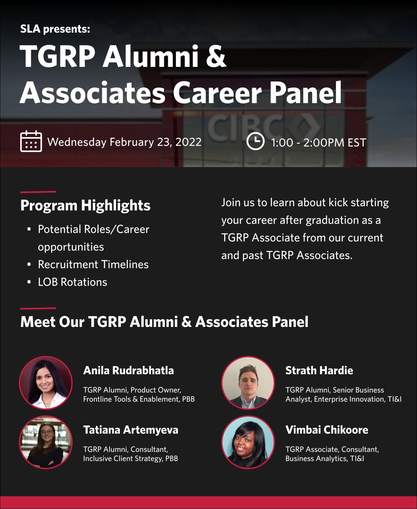
Version 2 (Final): A complete 180 compared to the pervious designs. Going for a very sleek and professional layout with a clear heirarchy and minimal color.
Transitioning from co-op to full time
In March 2022, I had the opportunity to take over the role of full-time UX researcher after my mentor and predecessor, Semire Akinola, transitioned to a different team within CIBC. Thus, in late April 2022 I was promoted from co-op to full time UXR, and thus began my journey into doing more than just user research.
Educating through fun, interactive, and welcoming learning sessions
During my time at Enterprise Innovation I was also a contributing member of the Innovation Design Guild, a group of design advocates who:
1. Craft engaging learning adventures.
2. Storytell design concepts and topics, and how it can apply to one’s work or day to day life.
3. Shape a space and community where anyone is welcome to learn, develop their skills in design, and connect with others within CIBC.
On average, I hosted at least 1 workshop every 4 months, and totalled over 200 workshop attendees.
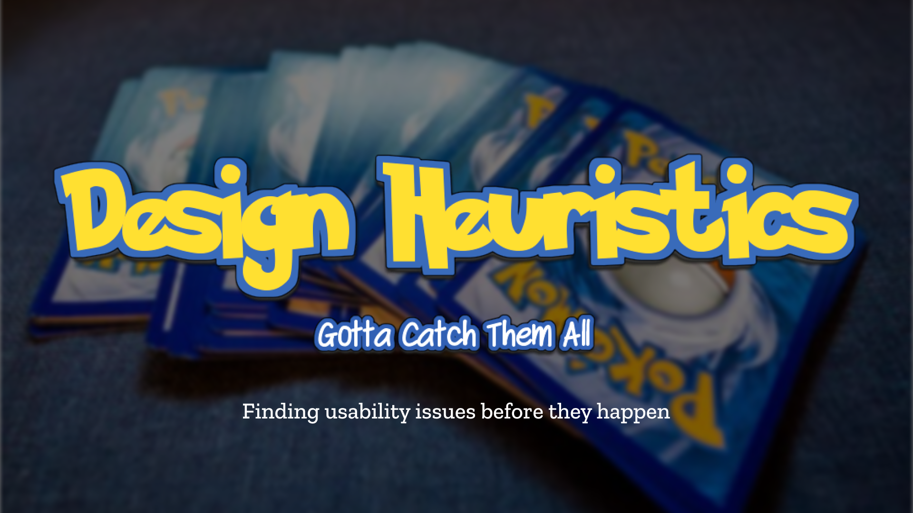
The title slide for my most recent presentation, Design Heuristics "Gotta Catch Them All".
In March 2023, I hosted Innovation Design Guild’s “Design Heuristics: Gotta Catch Them All” event, a Pokémon themed learning session about the 10 Design Heuristics, how to identify them, and how to conduct an heuristic evaluation.
The session made use of interactive examples and knowledge checks to keep participants engaged and present. In this example, I showed screenshots of error messages from the original Pokemon games that failed to support heuristic #9 “help users recognize, diagnose, and recover from errors.”
This was one of my most successful workshops at CIBC, with 102 total attendees and a Net Promoter Score of 95.
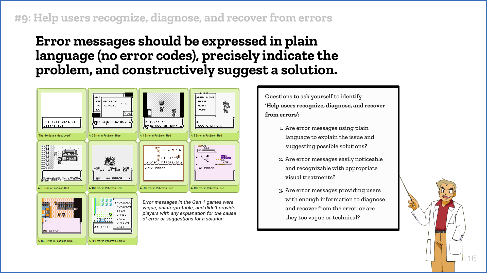
In this slide, it showcases the title of the heuristic, a clear, bold, key takeaway sentence, visual examples, as well as a series of "Questions to ask yourself" to help identify this heuristic. This format was used consistently throughout the presentation for all 10 heuristics.
I also did routine “Intro to UXR” sessions for new co-ops, rotationals or other team members every 4 months. These sessions involved interactive FigJam activities where I give an overview of what UXR is, when to do it, and how it can be helpful for their day to day. The goal of these sessions was to provide a high-level overview of UX research and to democratize the UXR landscape by making it more accessible, inclusive, and easier to understand for those unfamiliar with the practice. These sessions were typically smaller audiences, so it provided a really great opportunity for more personal conversations and getting participants to explain their rationale.
In this example, I asked each participant to vote on how they would categorize various types of research, and then took turns asking them to explain their rationale.
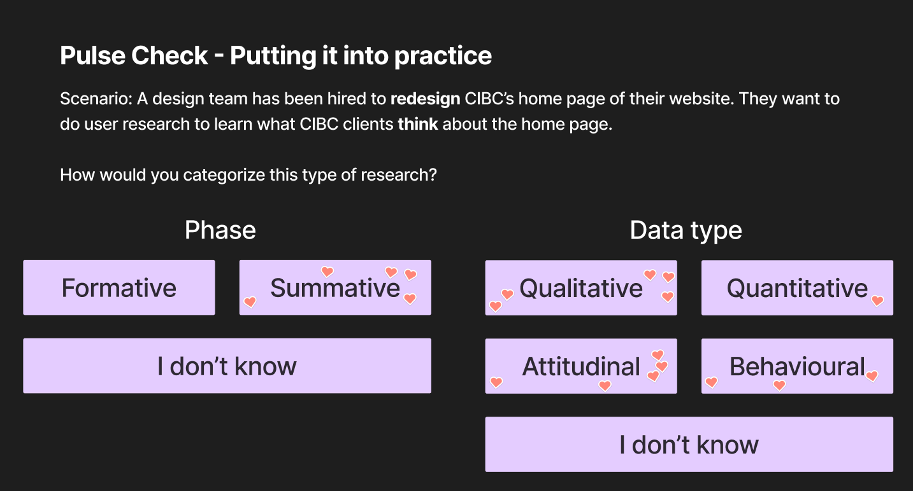
Screenshot from my Intro to UXR series facilitated through FigJam. How would you categorize this research? 😉
Succession planning
As the sole UX Researcher on the team, it was also important that I planned for a rainy day, in case I got sick or needed to take time off, that the team would have the appropriate resources, access, and confidence to do user research without me.
As more projects started coming my way, I needed to create a system that could document and store research asks asynchronously while I was busy facilitating other research projects. Presenting the UXR Scoping Canvas, a dynamic PowerPoint toolkit shared with team members to guide them in assessing the potential need for UXR in their ongoing projects.
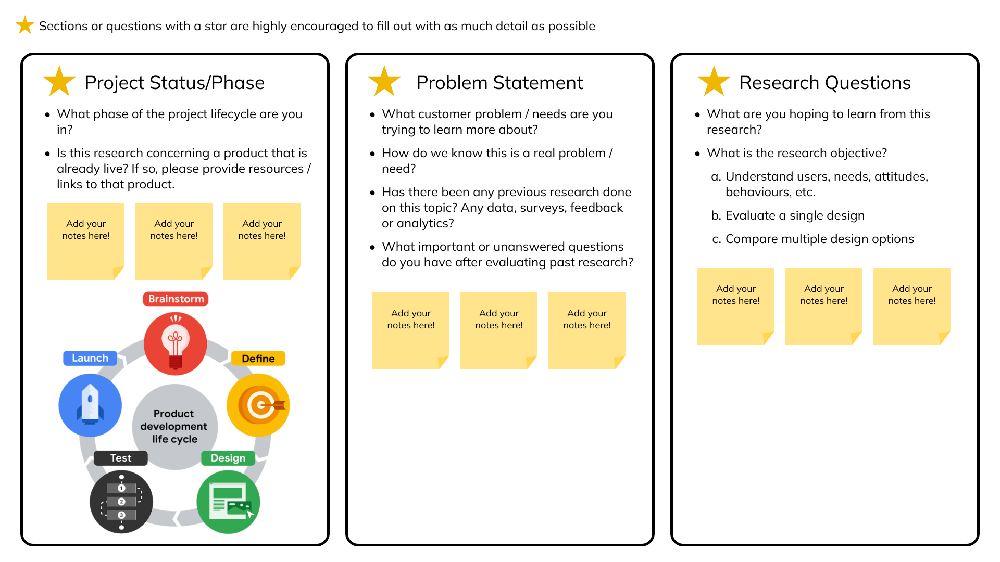
Screenshot of my UXR Scoping Canvas. This section of questions focused on helping me understand the project overall, and what questions my stakeholders were curious to learn about.
The canvas includes 9 sections in total:
Learn about the stakeholder
- Experience with UXR
- Research impact
- Requested support
Learn about the project
- Project status / phase
- Problem statement
- Research questions
- Target demographics
Learn about expectations
- Expected outcomes
- Next steps / Expected timelines
This canvas has been instrumental in getting more research done faster and efficiently, and has saved over 100 hours of unnecessary intake meetings (okay maybe not 100 hours, but definitely a lot of time saved).
I was also in charge of managing the usage of our vendors, namely UserTesting and Feedback Loop. I developed Excel trackers to meticulously monitor the monthly usage of these tools, ensuring optimal utilization and avoiding any over- or underutilization when the contract expires. This also involved working closely with my Director to accurately forecast our future requirements and projections, supported by well-founded justifications.
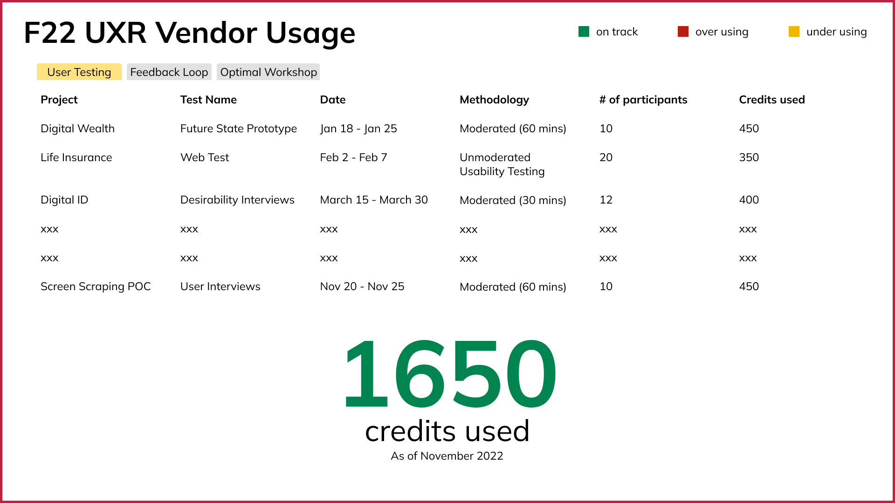
Screenshot of my vendor usage tracker. The overall credits used figure would change colors depending on an Excel formula ChatGPT helped me with.
2 years of memories, memes, and milestones
In true Enterprise Innovation fashion, I’d be remiss to not include a snapshot of my most memorable moments during my time at CIBC. I hope this shines a light into who I am and what I can bring to your team!
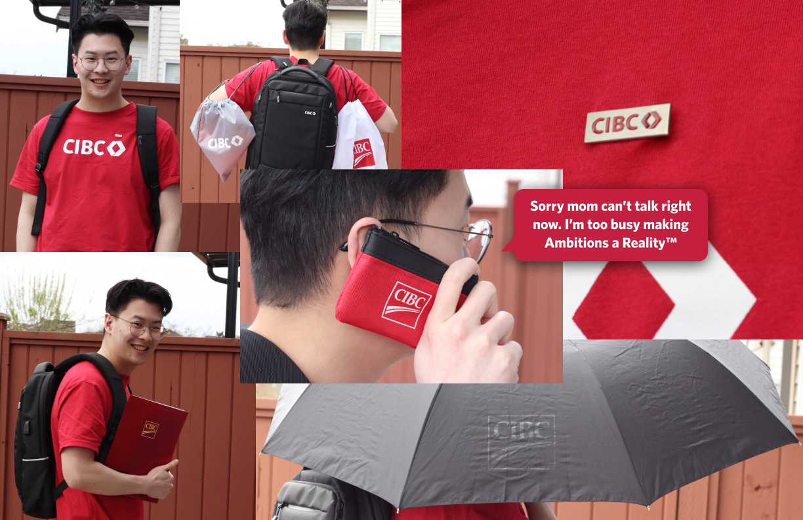
My winning submission to the CIBC and Me social media challenge. Can you believe this got 33.5k LinkedIn impressions 🤯
 I quoted "Tell Me Why" so often I became an honorary Backstreet Boy 🕺
I quoted "Tell Me Why" so often I became an honorary Backstreet Boy 🕺
When other teams would mention the depth of their UXR practice, my teams response would be this GIF + "We have a Justin" 🦸